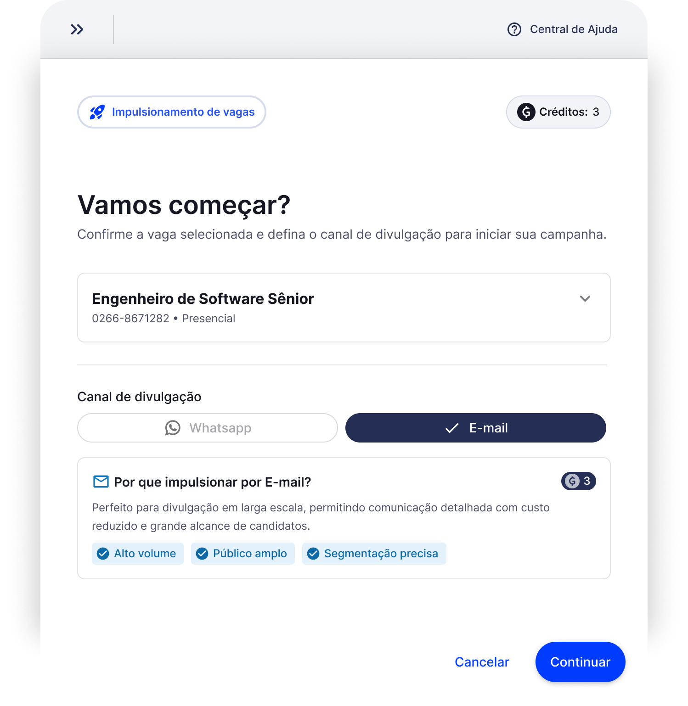
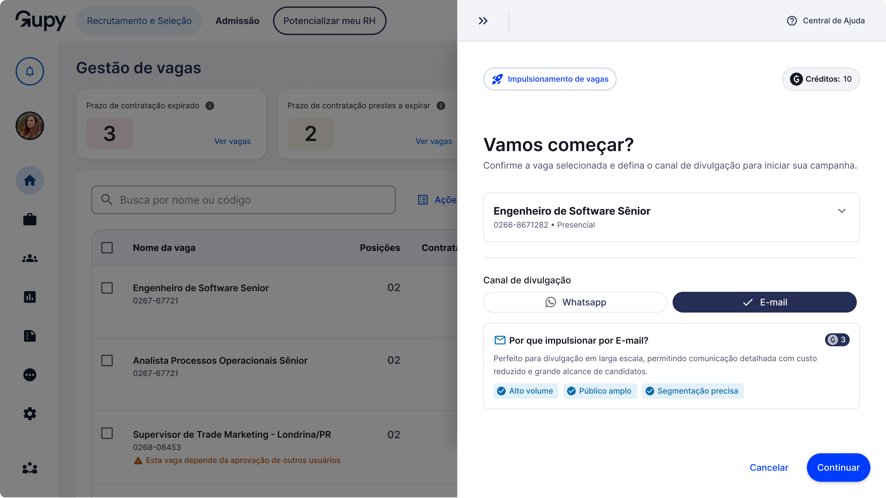
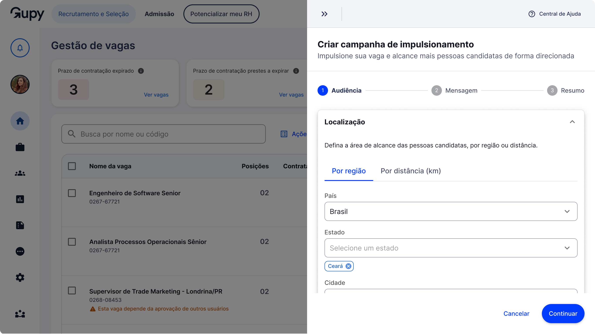
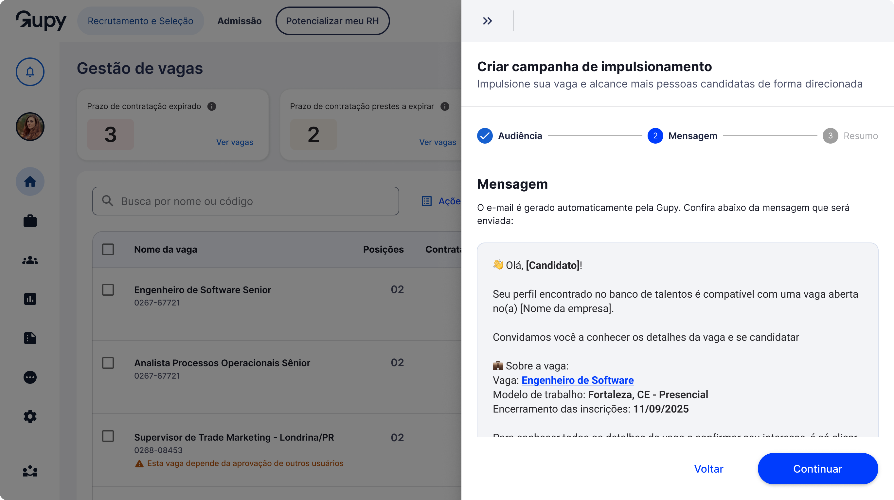
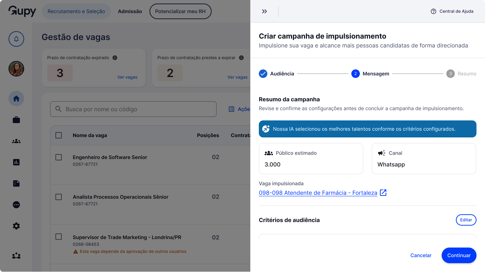
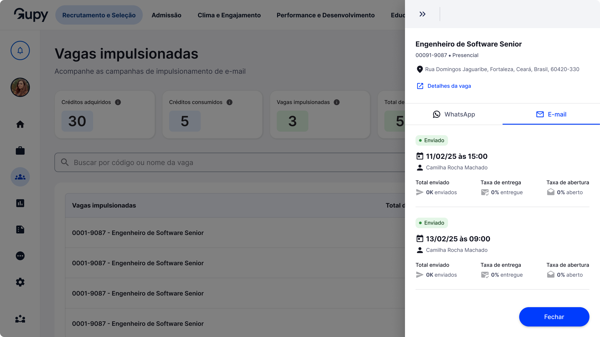

Não possui a senha? Entre em contato comigo no LinkedIn.
2026
Liderei o design do Impulsionamento de Vagas, criado para resolver um problema de churn: vagas sem candidaturas suficientes dependiam de um processo manual que não escalava. Desenhei uma solução com IA e tracking de ponta a ponta que automatizou a divulgação e tornou o impacto mensurável, alcançando milhões de talentos.

A Gupy é uma plataforma de recrutamento B2B que conecta empresas a candidatos em escala nacional. Dentro da área de Atração, identificamos um problema recorrente: vagas publicadas há mais de 15 dias sem atingir 50 candidaturas, o que chamamos de baixa atratividade.
Esse cenário gerava risco de churn especialmente para clientes com alto volume de contratações operacionais: varejistas, redes de farmácia, logística e serviços. Empresas como McDonald's, Raia Drogasil, Vivo, Stone e Total Express eram impactadas diretamente.
A solução existia, mas era manual: e-mails enviados um a um para o banco de talentos. Funcionava, mas não escalava, não tinha tracking e não gerava receita.
Vagas operacionais sem candidaturas suficientes aumentavam o risco de perder o cliente, sobretudo os de alto volume: varejo, farmácia e logística.
Vagas publicadas há mais de 15 dias sem atingir 50 candidaturas, o cenário que passamos a chamar de baixa atratividade.
Vagas operacionais ficavam semanas sem candidatos qualificados, aumentando o risco de perder a vaga e o cliente.
O processo manual não tinha tracking, não escalava e não gerava receita. Era esforço sem retorno mensurável.
Para crescer, o processo concierge precisava virar produto. Com tracking, permissionamento e receita mensurável.
Conduzi o discovery, entendi o processo manual atual e avaliei a viabilidade do produto, identificando onde a IA poderia automatizar a seleção de talentos. A partir daí, desenhei o fluxo de ponta a ponta, da criação da campanha ao dashboard de gestão.
Evolução estratégica com canal WhatsApp via grupos regionais e integração de IA para pré-seleção automática de filtros.
Em ambas as fases, conduzi diversos tipos de pesquisas com usuários e alinhamentos com stakeholders.
O banco da Gupy tem 17M+ de talentos. Sem inteligência de seleção, impulsionar para os candidatos certos seria impossível em escala.
Rankeamento de talentos com IA: a IA compara os dados de cada vaga com os de cada candidato, como cargo, localização, escolaridade e histórico, e mede o quanto cada talento combina com a vaga. Em vez de apenas filtrar, ela ordena todos por compatibilidade e seleciona os 3.000 mais aderentes para receber o convite e garantirmos mais precisão no resultado.
O recrutador escolhe a vaga que deseja impulsionar e confirma para iniciar a campanha.

O recrutador define localização, escolaridade, experiência e diversidade. O sistema exibe o público estimado e informa que a IA selecionará os 3.000 melhores talentos.

Preview do e-mail personalizado com nome da candidata, empresa e dados da vaga. O recrutador não edita: apenas confirma.

Revisão completa antes de confirmar: público estimado com recomendação da IA, vaga impulsionada, código e audiência. Pode voltar para editar.

Dashboard com créditos adquiridos e consumidos, vagas impulsionadas, total de candidaturas, contratações e próximo vencimento.
